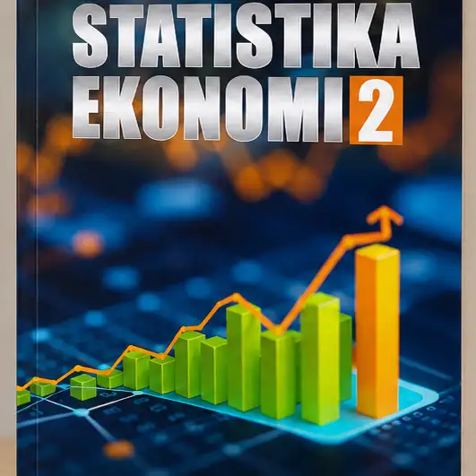
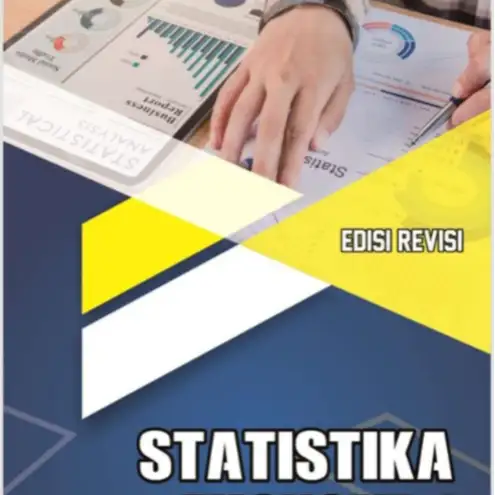

E-book digital Statistika Ekonomi 1 dan Statistika Ekonomi 2, disusun dengan bahasa sederhana, sistematis, dan cocok untuk pelajar, mahasiswa, dosen, peneliti, praktisi, serta masyarakat umum.


Banyak pembaca merasa Statistika Ekonomi sulit karena rumus terlihat rumit, pembahasan terlalu teknis, dan contoh soal kurang mudah dipahami. Padahal, Statistika sangat penting untuk memahami data, penelitian kuantitatif, analisis ekonomi, dan penyusunan karya ilmiah.
E-book Statistika Ekonomi karya Adriansah disusun untuk membantu pembaca memahami materi secara runtut, sederhana, dan mudah dipelajari. Pembahasan dibuat sistematis agar cocok digunakan untuk belajar mandiri, kebutuhan perkuliahan, penelitian, maupun pengembangan wawasan.
Penjelasan runtut dan sistematis
Bahasa sederhana dan komunikatif
Dilengkapi contoh soal dan latihan
Cocok untuk belajar mandiri
Membantu analisis data penelitian secara praktis
Rp45.000
Buku Statistika Ekonomi 1 ditulis untuk menjelaskan teori dasar statistika, khususnya dalam bidang ekonomi, serta membantu memecahkan masalah-masalah penelitian kuantitatif yang memerlukan aplikasi statistika. Buku ini juga dapat dijadikan panduan bagi mahasiswa dalam mata kuliah Statistika Ekonomi 1 dan rujukan bagi pembaca yang bergelut dalam bidang statistika.
Rp35.000
Buku Statistika Ekonomi 2 disusun dengan bahasa yang sederhana dan sistematis. Memuat sebelas bab yang terintegrasi, dari konsep probabilitas hingga analisis varian. Setiap bab dilengkapi contoh soal, pembahasan langkah demi langkah, dan latihan untuk memahami analisis secara bertahap.
Pengembangan suatu bidang ilmu yang dilakukan dengan pendekatan penelitian kuantitatif sangat membutuhkan statistika. Buku Statistika Ekonomi 1 ini ditulis untuk menjelaskan teori dasar statistika khususnya dalam bidang ekonomi, dan membantu memecahkan masalah-masalah penelitian kuantitatif yang memerlukan aplikasi statistika.
Di samping itu, buku ini juga dijadikan panduan bagi mahasiswa dalam mata kuliah Statistika Ekonomi 1 serta dapat digunakan sebagai rujukan bagi mereka yang bergelut dalam masalah-masalah statistika.
Buku ini ditulis dengan bahasa yang sederhana dan mudah dipahami oleh para pembacanya meskipun belum memahami Statistika. Di dalamnya disajikan penjelasan tentang Statistika secara runtut dan rinci dalam bentuk bab, di mana dalam setiap bab disajikan contoh-contoh soal dan latihan.
Buku ini diharapkan dapat membantu mahasiswa, peneliti, serta pihak-pihak yang tertarik dengan Statistika dalam menyelesaikan analisis data penelitian maupun penyelesaian karya ilmiah lainnya.
Buku Statistika Ekonomi 2 disusun dengan bahasa yang sederhana dan sistematis. Buku ini memuat sebelas bab yang saling terintegrasi, dimulai dari konsep dasar probabilitas hingga analisis varian satu jalur dan dua jalur. Setiap bab dilengkapi dengan contoh soal, pembahasan langkah demi langkah, serta latihan yang membantu pembaca memahami proses analisis secara bertahap.
Materi yang dibahas mencakup distribusi sampling, estimasi parameter, pengujian hipotesis proporsi dan rata-rata, korelasi, regresi linear sederhana dan berganda, statistik nonparametrik, serta analisis varian satu jalur dan dua jalur.
Keunggulan buku ini terletak pada penyajian metode penyelesaian secara manual yang dipadukan dengan penggunaan aplikasi seperti SPSS dan SmartPLS, sehingga memberikan gambaran praktis dalam pengolahan data penelitian.
Dengan bahasa yang komunikatif dan sistematika penulisan yang jelas, buku ini diharapkan dapat menjadi rujukan utama bagi mahasiswa, dosen, peneliti, serta praktisi yang membutuhkan pemahaman mendalam mengenai analisis data kuantitatif di bidang ekonomi.
Buku ini dirancang khusus untuk memberikan kemudahan dan manfaat maksimal bagi pembacanya.
Disusun secara berurutan agar mudah diikuti.
Penjelasan mudah dipahami tanpa bahasa yang kaku.
Cocok untuk pembaca pemula maupun lanjutan.
File tersimpan selamanya, bebas dipelajari kapanpun.
Bisa dibuka melalui HP, tablet, laptop, dan PC.
Sangat mendukung proses pembelajaran secara mandiri.
Membantu kebutuhan kuliah, penelitian, dan analisis data.
Panduan tepat dalam penyelesaian penyusunan karya ilmiah.
Cocok untuk mahasiswa, dosen, peneliti, praktisi, dan umum.
Sekali bayar, e-book bisa dipelajari kapan saja.
Pilih e-book yang ingin dibeli dan klik tombol "Beli".
Isi form pemesanan dengan data yang valid.
Transfer pembayaran ke rekening yang tersedia (Cantumkan nama pengirim).
Upload bukti transfer melalui form pemesanan sebelum klik kirim.
Admin akan memverifikasi. E-book PDF akan dikirim setelah pembayaran dikonfirmasi.
Terima kasih atas kepercayaan Anda. Silakan lakukan pembayaran sesuai harga produk yang dipilih melalui rekening berikut:
Nomor Rekening
Nama Rekening
Adriansah
Terima kasih. Pesanan Anda sudah diterima. Admin akan memverifikasi pembayaran dan mengirimkan e-book ke email/WhatsApp Anda setelah pembayaran berhasil dikonfirmasi.